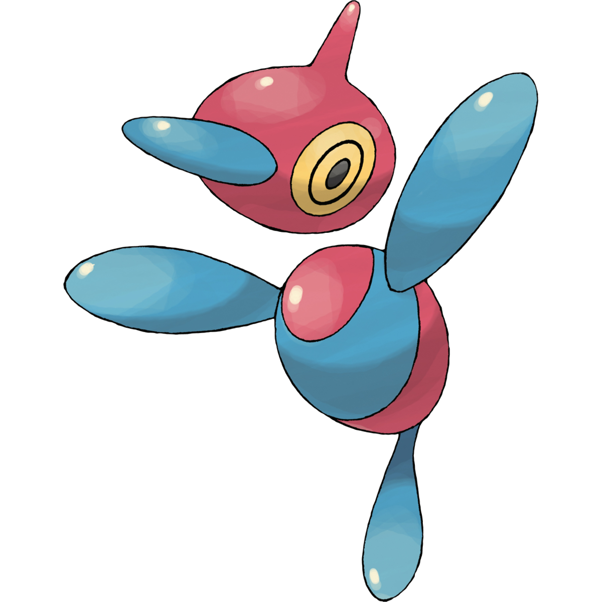

<script src=lib6.js></script>

<body bgcolor=black text=white link=white alink=white vlink=white>
<center>
<canvas id='canvas1' width=800 height=800></canvas>
</center>
</body>

<!!------------------------ VERTEX SHADER ------------------------>

<script id='my_vertex_shader' type='x-shader/x-vertex'>
   attribute vec3 aPos;
   attribute vec3 aNor;
   attribute vec2 aUV ; // WE HAVE ADDED A NEW ATTRIBUTE

   uniform   mat4 uMat;

   varying   vec3 vPos;
   varying   vec3 vNor;
   varying   vec2 vUV ; // AND A NEW VARYING VARIABLE

   uniform float uFL;

   mat4 inverse(mat4 m) {
      float x = dot(m[0],m[0]), y = dot(m[1],m[1]), z = dot(m[2],m[2]);
      return mat4(m[0].x / x, m[1].x / y, m[2].x / z, 0.,
                  m[0].y / x, m[1].y / y, m[2].y / z, 0.,
                  m[0].z / x, m[1].z / y, m[2].z / z, 0.,
          -dot(m[0],m[3])/x, -dot(m[1],m[3])/y, -dot(m[2],m[3])/z, 1.);
   }

   void main() {
      vec4 pos = uMat * vec4(aPos, 1.);
      pos /= 1. - pos.z / uFL;
      gl_Position = vec4(pos.xyz, 1.);

      vPos = aPos;
      vNor = (vec4(aNor,.0) * inverse(uMat)).xyz;

      vUV  = aUV ; // IN THE VERTEX SHADER, WE JUST NEED TO COPY aUV into vUV
   }
</script>

<!!-------------------- FRAGMENT SHADER --------------------------->

<script id='my_fragment_shader' type='x-shader/x-fragment'>
uniform float uFL;
uniform mat3  uL[2];
uniform mat4  uM;
uniform float uTime;

uniform sampler2D uSampler[2];
uniform vec3 uTexture;

varying vec3  vNor;
varying vec3  vPos;
varying vec2  vUV ;

void main() {
   vec3 normal = normalize(vNor);
   vec3 R = reflect(vec3(0.,0.,-1.), normal);
   vec2 uv = vUV;

   vec3 color = uM[0].rgb;
   for (int n = 0 ; n < 2 ; n++)
      color += uL[n][1] * (
         uM[1].rgb * max(0.,dot(normal, uL[n][0])) +
         uM[2].rgb * pow(max(0., dot(R, uL[n][0])), uM[2].a) );

   color *= uTexture.x*texture2D(uSampler[0], uv).xyz + uTexture.y*texture2D(uSampler[1], uv).xyz + uTexture.z;

   gl_FragColor = vec4(sqrt(color), 1.0);
}
</script>

<!!------------------- DESCRIPTIVE TITLE ------------------------>

<script id='my_title' type='text/html'>
<font face=helvetica>&nbsp;<br>GO! PORYGON Z!
</script>


<!!------------------ GENERAL HTML SUPPORT ---------------------->

<script>
var vs = my_vertex_shader.innerHTML,
    fs = my_fragment_shader.innerHTML;
    fs = fs.substring(1, fs.length);

document.body.innerHTML = [''
   ,'<center><font size=12 color=#b0b0b0>' + my_title.innerHTML + '</center>'
   ,'<TABLE cellspacing=0 cellpadding=0><TR>'
   ,'<td width=50></td><td><font color=red size=5><div id=errorMessage>&nbsp;</div></font></td>'
   ,'</TR><TR>'
   ,'<table cellspacing=10>'
   ,'<tr>'
   ,'</td><td valign=top>' + document.body.innerHTML + '</td>'
   ,'<td valign=top><font size=2 color=red><div id=errorMarker>&nbsp;</div></font></td>'
   ,'<td valign=top>'
   ,'<textArea id=textArea spellcheck=false '
   ,'style="font:20px courier;outline-width:0;border-style:none;resize:none;overflow:scroll;"'
   ,'></textArea>'
   ,''
   ,'</tr></table>'
   ,'</TR></TABLE>'
   ].join('');

var i, text = fs.split('\n'), cols = 0;
for (i = 0 ; i < text.length ; i++)
   cols = Math.max(cols, text[i].length);

textArea.rows = 30;
textArea.cols = cols + 2;
textArea.value = fs;
textArea.style.backgroundColor = '#202020';
textArea.style.color = 'white';
textArea.onkeyup = function() { canvas1.setShaders(vs, this.value); isFirstTime = true; }

let startTime = Date.now();

//------------------------- BUILDING PARAMETRIC MESH OBJECTS -------------------------

let sphere = (u,v) => {
   let theta = 2 * Math.PI * u,
       phi = Math.PI * (v - .5);
   let x = Math.cos(theta) * Math.cos(phi),
       y = Math.sin(theta) * Math.cos(phi),
       z = Math.sin(phi);
   return [ x,y,z, x,y,z, u,v ];
}

let halfsphere = (u,v) => {
  let theta = Math.PI * u,
      phi = Math.PI * (v - .5);
  let x = Math.cos(theta) * Math.cos(phi),
      y = Math.sin(theta) * Math.cos(phi),
      z = Math.sin(phi);
  return [ x,y,z, x,y,z, u,v ];
}

let cylinder = (u,v) => {
  let theta = 2 * Math.PI * u;
  let x = Math.cos(theta)
      y = Math.sin(theta)
      z = v;
  return [ x,y,z, x,y,z, u,v ];
}
let circle = (u,v) => {
  let theta = 2 * Math.PI * u,
      r = v;
  let x = r * Math.cos(theta)
      y = r * Math.sin(theta)
      z = 0;
  return [ x,y,z, x,y,z, u,v ];
}

let r0 = 1, r1 = .4;

let torus = (u,v) => {
   let theta = 2 * Math.PI * u, ct = Math.cos(theta), st = Math.sin(theta);
   let phi   = 2 * Math.PI * v, cp = Math.cos(phi  ), sp = Math.sin(phi  );

   return [ ct * (r0 + r1 * cp), st * (r0 + r1 * cp), r1 * sp,
            ct * cp, st * cp, sp,    u,v ];
}

let createTriMesh = (xyzFunc, nCols, nRows) => {
   let triMesh = [];
   for (let row = 0 ; row < nRows ; row++) {
      let v0 = row / nRows;
      let v1 = (row+1) / nRows;

      for (let col = 0 ; col <= nCols ; col++) {
         let u = col / nCols;
         if (row % 2)
            u = 1 - u;

         let p0 = xyzFunc(u, v0),
             p1 = xyzFunc(u, v1);
         for (let n = 0 ; n < p0.length ; n++)
            triMesh.push(p0[n]);
         for (let n = 0 ; n < p1.length ; n++)
            triMesh.push(p1[n]);
      }
   }
   return triMesh;
}

stride = 8;
let torus32x32 = createTriMesh(torus, 32, 32);
let sphere16x8 = createTriMesh(sphere, 16,  8);
let sphere32x16 = createTriMesh(sphere, 32,  16);
let halfsphere16x8 = createTriMesh(halfsphere, 16,  8);
let cylinder16x8 = createTriMesh(cylinder, 16,  8);
let circle16x8 = createTriMesh(circle, 16,  8);

//------------------------ ANIMATION --------------------------

// YOU MIGHT WANT TO MOVE THESE SUPPORT FUNCTIONS INTO THE LIBRARY,
// SO YOU CAN USE THEM LATER IN OTHER THINGS YOU CREATE.

let m = new Mat4();                                    // DEFINE A NEW 4x4 MATRIX OBJECT.

let plastic = (r,g,b,p,s) => {
   if (p === undefined) p = 10;
   if (s === undefined) s = 1;
   return [.2*r,.2*g,.2*b,0, r,g,b,0, s,s,s,p, 0,0,0,0];
}

let metal = (r,g,b,p,s) => {
   if (p === undefined) p = 10;
   if (s === undefined) s = 1;
   return [.2*r,.2*g,.2*b,0, r,g,b,0, s*r,s*g,s*b,p, 0,0,0,0];
}

let normalize = v => {
   let s = Math.sqrt(v[0] * v[0] + v[1] * v[1] + v[2] * v[2]);
   return [v[0] / s, v[1] / s, v[2] / s];
}

let lights = [];

let clearLights = () => lights = [];

let addLight = (dir,color) => {
   dir = normalize(dir);
   let newLight = [dir[0],dir[1],dir[2], color[0],color[1],color[2], 0,0,0];
   for (let n = 0 ; n < newLight.length ; n++)
      lights.push(newLight[n]);
}

// NAIVE ALGORITHM FOR EVALUATING BEZIER CURVES.
// THIS IS EASIER TO UNDERSTAND, BUT CANNOT BE OPTIMIZED.

let mix = (a,b,t) => a + t * (b - a);

let evalBezier1 = (P, t) => {
   let A = mix(P[0], P[1], t);
   let B = mix(P[1], P[2], t);
   let C = mix(P[2], P[3], t);

   return mix ( mix(A,B,t), mix(B,C,t), t );
}

// BETTER ALGORITHM FOR EVALUATING BEZIER CURVES.
// THIS CAN BE OPTIMIZED TO RUN VERY EFFICIENTLY,
// IF C = mxv(bezierMatrix, P) IS DONE BEFOREHAND.

let bezierMatrix = [ -1,3,-3,1, 3,-6,3,0, -3,3,0,0, 1,0,0,0 ];

let mxv = (m, v) => {
   let dst = [];
   for (let i = 0 ; i < 4 ; i++) {
      dst[i] = 0;
      for (let j = 0 ; j < 4 ; j++)
         dst[i] += m[i + 4*j] * v[j];
   }
   return dst;
}

let evalBezier = (P, t) => {
   let C = mxv(bezierMatrix, P);
/*
   return t*t*t * C[0] + t*t * C[1] + t * C[2] + C[3];
*/
   return C[3] + t * (C[2] + t * (C[1] + t * C[0]));
}

let evalBezierSpline = (S, t) => {
   let T = (t % 1) * S.length;
   let i = Math.floor(T);
   return evalBezier(S[i], T - i);
}
let evalFrame = (S, t) => {
  let T = (t % 1) * S.length;
  let i = Math.floor(T);
  return S[i];
}

let isFirstTime = true;

function animate(gl) {
   let time = (Date.now() - startTime) / 1000;

   setUniform('3fv', 'uMouse', canvas1.mouseInfo);
   setUniform('1f', 'uTime', time);

   if (isFirstTime) {
      isFirstTime = false;

      setUniform('1f', 'uFL', 3.5);

      // SPECIFY BACKGROUND COLOR AND LIGHT SOURCES

      bgColor = [.7,.6,.5];
      clearLights();
      addLight([1,1,1], bgColor);
      addLight([-1,-1,-1], [.25,.1,.05]);
      setUniform('Matrix3fv', 'uL', false, lights);

      let textureImageFiles = ['porygonz_face.png', 'porygonz_body.png'];//

      let images = [];
      let samplers = [];
      for (let n = 0 ; n < textureImageFiles.length ; n++) {
         images[n] = new Image();
         samplers.push(n);
         images[n].onload = () => {
            try {
               gl.activeTexture (gl.TEXTURE0 + n);
               gl.bindTexture   (gl.TEXTURE_2D, gl.createTexture());
               gl.pixelStorei   (gl.UNPACK_FLIP_Y_WEBGL, true);
               gl.texImage2D    (gl.TEXTURE_2D, 0, gl.RGBA, gl.RGBA, gl.UNSIGNED_BYTE, images[n]);
               gl.generateMipmap(gl.TEXTURE_2D);
            }
            catch(e) { console.log(e); }
         }
         images[n].src = textureImageFiles[n];
      }
      setUniform('1iv', 'uSampler', samplers);
   }

   // CLEAR EVERYTHING TO THE BACKGROUND COLOR
   gl.clearColor(bgColor[0],bgColor[1],bgColor[2],1);

   // ANIMATE AND DRAW ALL THE OBJECTS IN THE SCENE
  let t = time / 21 % 1;
  let pi = Math.PI;
  let s = Math.sin(5*time); let c = Math.cos(5*time);
  let spo = Math.sin(3*time - 1.); let spc = Math.sin(3*time + 1.);

  // Texture Choosers
  textureFace = [1.,0.,0.];
  textureBody = [0.,1.,0.];
  textureNone = [0.,0.,1.];


  //--------//
  // JOINTS //
  //--------//
  function joint(m){ m.save();
      m.scale(.05,.05,.05);
      drawMesh(m, sphere16x8, plastic(.0,.0,.0), textureNone);
    m.restore(); }

  //----------------//
  // ABOVE THE NECK //
  //----------------//
  function above_neck(m, rotX, rotY, rotZ){ m.save();
    m.rotateZ(rotX); m.rotateX(rotY); m.rotateY(1.0+rotZ);
    head(m);
    nose(m);
    head_spike(m);
  m.restore(); }

  function head(m){
      m.translate(-0.08,.16,.0);
      m.scale(.25,.18,.18);
      m.rotateX(Math.PI/2.);
      drawMesh(m, sphere16x8, plastic(.6,.4,.4), textureFace);
      m.rotateX(-Math.PI/2.);}

  function nose(m){ m.save();
      m.translate(-1.,.0,.0);
      m.scale(.8,.2,.45);
      drawMesh(m, sphere16x8, plastic(.0,.6,1.), textureNone);
    m.restore(); }

  function head_spike(m){ m.save(); // REPLACE WITH HEAD DEFORMATION INTO SPIKE
      m.translate(.0,.6,.0);
      m.scale(.15,1.5,.15);
      drawMesh(m, sphere16x8, plastic(.8,.1,.1), textureNone);
    m.restore(); }

  //----------------//
  // BELOW THE NECK //
  //----------------//
  function below_neck(m,TORSOrx,TORSOry,TORSOrz,SHOULDERrx,SHOULDERry,SHOULDERrz,TAILrx){ m.save();
      m.translate(.0,-.27,.0);
      torso(m,TORSOrx,TORSOry,TORSOrz,TAILrx);
      m.save(); // RIGHT APPENDAGE
        //m.rotateX(appendage);
        m.translate(.145,.15,.0);
        m.rotateX(SHOULDERrx); m.rotateY(SHOULDERry); m.rotateZ(SHOULDERrz);
        //joint(m); // right shoulder
        m.translate(.19,.0,.0);
        arm(m);
      m.restore();
      m.save(); // LEFT APPENDAGE
        //m.rotateX(appendage);
        m.translate(-.145,.15,.0);
        m.rotateX(-SHOULDERrx); m.rotateY(-SHOULDERry); m.rotateZ(-SHOULDERrz);
        //joint(m); // left shoulder
        m.translate(-.19,.0,.0);
        arm(m);
      m.restore();
    m.restore(); }

  function torso(m,rotx,roty,rotz,TAILrx){ m.save();
      m.rotateX(Math.PI/2 + .7 + rotx); m.rotateY(roty);
      tail(m, TAILrx);
      m.rotateZ(rotz);
      m.scale(.18,.18,.25);//m.scale(.18,.25,.18);
      drawMesh(m, sphere16x8, plastic(.6,.4,.4), textureBody);
    m.restore(); }

  function arm(m){ m.save(); // DEFORM
      m.scale(.2,.07,.07);
      drawMesh(m, sphere16x8, plastic(.0,.6,1.), textureNone);
    m.restore(); }

  function tail(m, rotx){ m.save(); // DEFORM
      m.translate(.0,.0,.25);
      m.rotateX(-1.5+rotx); // tilt tail forwards;
      //joint(m); // tail joint
      m.translate(.0,-.2,.0);
      m.scale(.07,.2,.07);
      drawMesh(m, sphere16x8, plastic(.0,.6,1.), textureNone);
    m.restore(); }

  //-----------//
  // POKE BALL //
  //-----------//
  function pokeball(m,size,action){ m.save();
      m.rotateY(time);
      m.translate(.0,-2*(.4-size),.0);
      m.scale(size,size,size);
      m.save(); // OUTSIDE TOP HALF, RED
        m.translate(.0,.05,.0);
        m.translate(.0,-.05,-1.);
        m.rotateX(action);
        m.translate(.0,.05,1.);
        drawMesh(m,halfsphere16x8,plastic(1.,0.,0.), textureNone);
      m.restore();
      m.save(); // OUTSIDE BOTTOM HALF, WHITE
        m.rotateZ(Math.PI);
        m.translate(.0,.05,.0);
        drawMesh(m,halfsphere16x8,plastic(1.,1.,1.), textureNone);
      m.restore();

      m.scale(.95,.95,.95);
      m.save(); // OUTSIDE TOP HALF, RED
        m.translate(.0,.0,-1.);
        m.rotateX(action);
        m.translate(.0,.0,1.);
        drawMesh(m,halfsphere16x8,plastic(0.,0.,0.), textureNone);
      m.restore();
      m.save(); // INSIDE BOTTOM HALF, BLACK
        m.rotateZ(Math.PI);
        drawMesh(m,halfsphere16x8,plastic(0.,0.,0.), textureNone);
      m.restore();
      m.translate(.0,.0,0.9);
      m.scale(.3,.3,1.);
      m.save(); // BLACK BUTTON CYLINDER
        m.scale(1.,1.,.2);
        drawMesh(m,cylinder16x8,plastic(0.,0.,0.), textureNone);
      m.restore();
      m.save(); // BLACK BUTTON CIRCLE
        m.translate(.0,.0,.2);
        drawMesh(m,circle16x8,plastic(0.,0.,0.), textureNone);
      m.restore();
      m.scale(.7,.7,1.);
      m.save(); // WHITE BUTTON CYLINDER
        m.scale(1.,1.,.23);
        drawMesh(m,cylinder16x8,plastic(1.,1.,1.), textureNone);
      m.restore();
      m.save(); // WHITE BUTTON CIRCLE
        m.translate(.0,.0,.23);
        drawMesh(m,circle16x8,plastic(1.,1.,1.), textureNone);
      m.restore();
    m.restore() }


  //-----------//
  // MAIN CALL //   21 FRAMES
  //-----------//
  m.identity();

  //-- POKEBALL --//
  let bi = [.4,.4,.4,.4], // big
      sm = [.05,.05,.05,.05], // small
      shr = [.4, .2, .075, .05], // shrink
      gro = [.05, .075, .2, .4]; // grow
  let moveframes = [bi,bi,bi,bi,bi, shr, sm,sm,sm,sm,sm,sm, sm,sm,sm,sm,sm,sm,sm,sm, gro];
  let POKEBALLsize = evalBezierSpline(moveframes,t);
  let cld = 0., // closed
      op = -Math.PI / 2 * ( (1/2) * (1 + spo) ), // open action
      opd = -Math.PI / 2, // opened
      cl = -Math.PI / 2 * ( (1/2) * (1 + spc) ); // close action
  let actionframes = [cld,cld,cld,cld,cld, cld, op,opd,opd,opd,opd,opd, opd,opd,opd,opd,opd,opd,opd,cl, cld];
  let POKEBALLropen = evalFrame(actionframes,t);

  pokeball(m, POKEBALLsize, POKEBALLropen);


  //-- NECK --//
  t = time / 4 % 1;
  let updown = [0.0, 0.125, -0.125, 0.0];
  let NECKmx = 0.0;                                     // LEFT TO RIGHT
  let NECKmy = evalBezierSpline([updown,updown], 2*t);  // UP AND DOWN
  let NECKmz = 0.0;                                     // FORWARD AND BACKWARD
  let NECKrx = 0.0;
  let NECKry = time;
  let NECKrz = 0.0;

  m.rotateX(NECKrx); m.rotateY(NECKry); m.rotateZ(NECKrz);

  //-- PORYGON-Z ACTION --//
  t = time / 21 % 1;
  sm = [.01,.01,.01,.01]; // small
  bi = [1.,1.,1.,1.]; // big
  gro = [.01, .3, .8, 1.]; // grow
  shr = [1., .8, .3, .01]; // shrink
  let necksizeframes = [sm,sm,sm,sm,sm, sm, sm,gro,bi,bi,bi,bi, bi,bi,bi,bi,bi,bi,shr,sm, sm];
  let NECKsize = evalBezierSpline(necksizeframes,t);

  m.translate(NECKmx,NECKmy + (-2*(.4-POKEBALLsize)) + (-1*(.01 - NECKsize)),NECKmz);
  m.scale(NECKsize, NECKsize, NECKsize);
  //joint(m); // NECK

  //-- ABOVE & BELOW NECK --//
  t = time / 4 % 1;
  backfor = [-0.2, -0.5, 0.1, -0.2];
  let HEADrx = evalBezierSpline([backfor, backfor], 2*t); // Bend Forward/Backward
  let HEADry = 0.0;                                       // Shimmy
  let HEADrz = 0.0;                                       // Bend Sideways
  forback = [0.0, -0.4, 0.5, 0.0];
  let TORSOrx = evalBezierSpline([forback, forback], 2*t);
  let TORSOry = .0;
  let TORSOrz = -Math.PI/2;
  move = [0, -0.3, 0.3, 0];
  let SHOULDERrx = 0.0;
  let SHOULDERry = -0.4;
  let SHOULDERrz = 0.4 + evalBezierSpline([move, move], 2*t);
  forback = [0.0, -0.3, 0.1, 0.0]
  let TAILrx = -1.1 + evalBezierSpline([forback, forback], 2*t);

  above_neck(m,HEADrx,HEADry,HEADrz);
  below_neck(m,TORSOrx,TORSOry,TORSOrz,SHOULDERrx,SHOULDERry,SHOULDERrz,TAILrx);

}

gl_start(canvas1, vs, fs);
</script>
